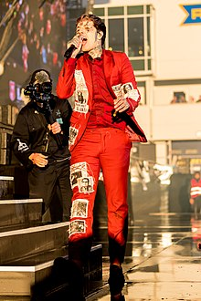
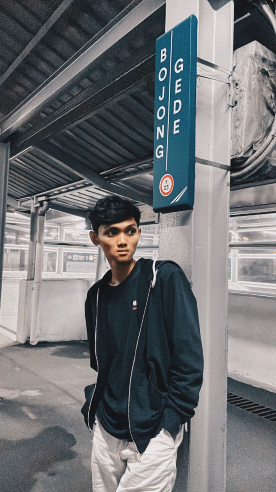

Oliver Sykes:
 Vokalis Utama (2004,sekarang)
Matt Kean:
Bassis (2004,sekarang)
Lee Malia:
gitaris I (lead) (2004, sekarang); gitaris II (rhythm) (2013,sekarang)
Matt Nicholls:
drummer dan perkusi (2004,sekarang)
Jordan Fish:
kibordis, pemrograman, perkusi, vokal(2012,sekarang)
| Tanggal Rilis | Judul Lagu |
|---|---|
| 21 Agustus 2018 | Mantra |
| 21 Oktober 2018 | Wonderful Life |
| 3 Januari 2019 | Medicine |
| 22 Januari 2019 | Mother Tongue |
| 24 Januari 2019 | Nihilist Blues |
| 26 Juli 2019 | Sugar Honey Ice & Tea |
| Haykal Rizky Adam | |
| NIM: | 11210251000106 |
|  |